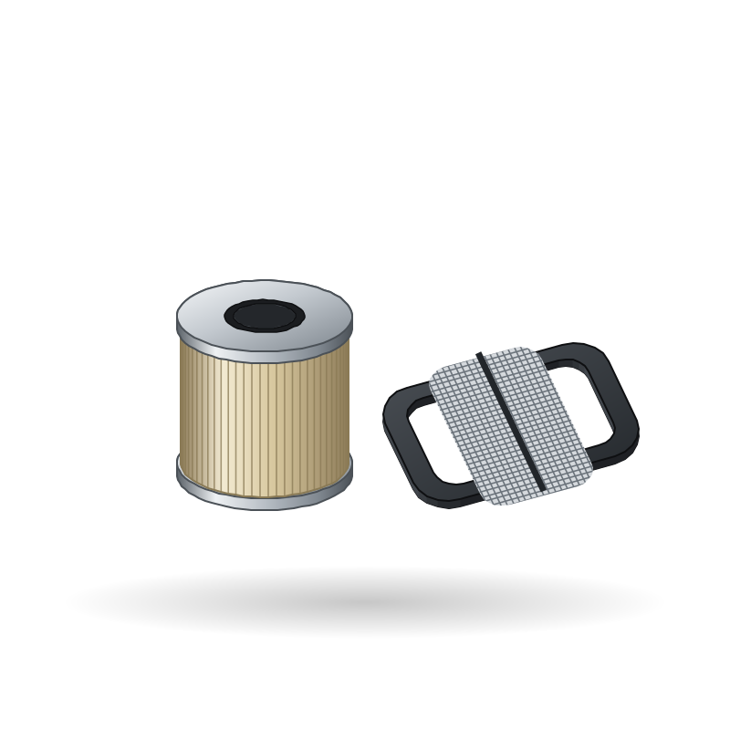

Spare parts / Honda / CB650R / CBR650R / Oil filter / strainer
Honda CB650R / CBR650R oil filter / strainer
Oil filter / strainer for the Honda CB650R / CBR650R: when to replace it, what it costs, where to buy it and how to fit it.

IllustrationWhere to buy
- Google ShoppingSearch results for this partgoogle.com ↗
- eBaySearch results for this partebay.com ↗
- AliExpressSearch results for this partaliexpress.com ↗
- AmazonSearch results for this partamazon.de ↗
- EbaySearch results for this partebay.de ↗
- FC-MotoAftermarket specialist: Large EU catalogue, 10k+ products, full datafeedfc-moto.de ↗
- LouisAftermarket chain: Wear-part catalogue with bike database (pads, chain kits, filters, plugs)louis-moto.com ↗
- CMSNLOEM parts (fiche): OEM exploded diagrams for Japanese brandscmsnl.com ↗
- WemotoAftermarket specialist: Commuter and scooter parts incl. Asian 125swemoto.com ↗
Check the part number for your model year before you buy. Genuine (OEM) parts first; good aftermarket parts are fine for wear items. Links open shop searches; Moto Zero earns nothing from them today and will say so here if that changes.
Fit it yourself
Fitment
| Model | Honda CB650R / CBR650R |
| Type | Sport/Naked |
| Engine | 650 cc |
| Final drive | Chain |
| Brakes | Disc |
| Main markets | EU |
Questions
How often should I replace the oil filter / strainer on a Honda CB650R / CBR650R?
As a guide, Every 1-2 oil changes. The owner's manual for your model wins, and riding on dusty roads, with a passenger or with heavy loads shortens it.
How much does a Honda CB650R / CBR650R oil filter / strainer cost?
Typically US$ 2 to 15, depending on genuine or aftermarket and the shop. Prices are indicative.
Can I replace the oil filter / strainer myself?
The job is rated 2 of 5 for difficulty. Follow the step-by-step guide and the values for your model.
More parts for the Honda CB650R / CBR650R
 Illustration
Illustration Illustration
Illustration Illustration
Illustration Illustration
Illustration Illustration
Illustration Illustration
IllustrationAll parts for the Honda CB650R / CBR650R → Oil filter / strainer for other bikes →